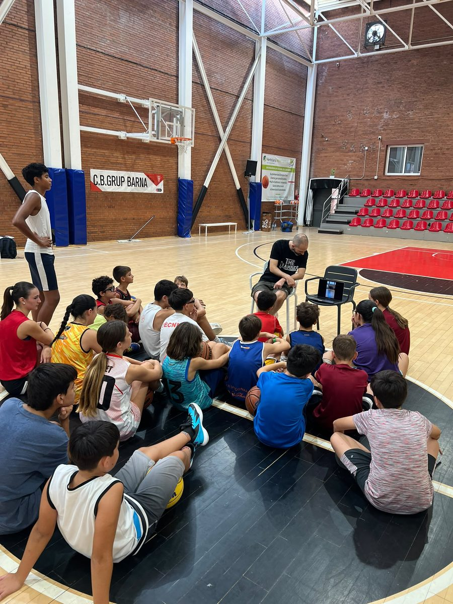
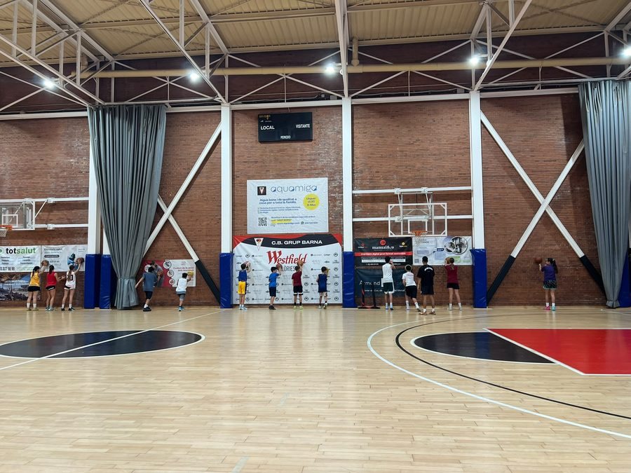
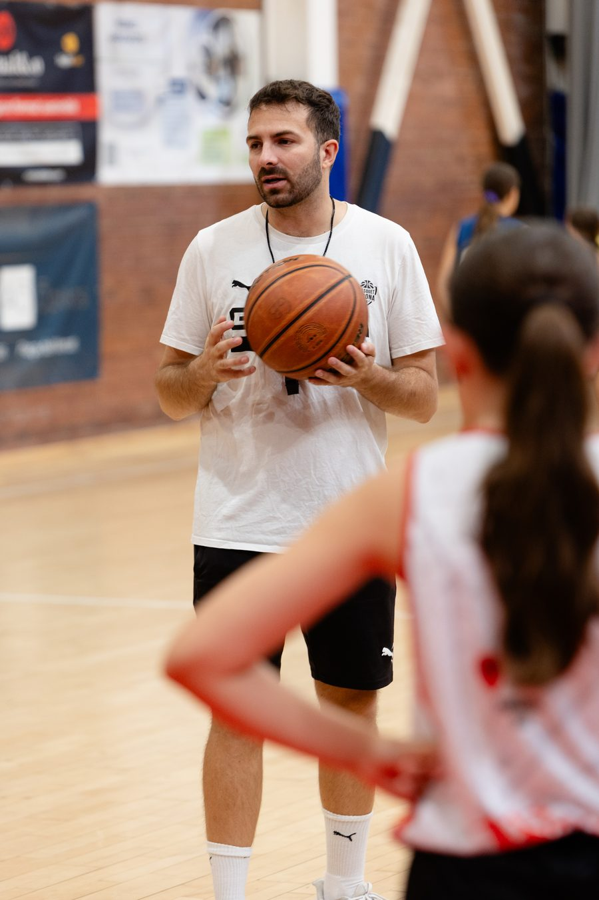
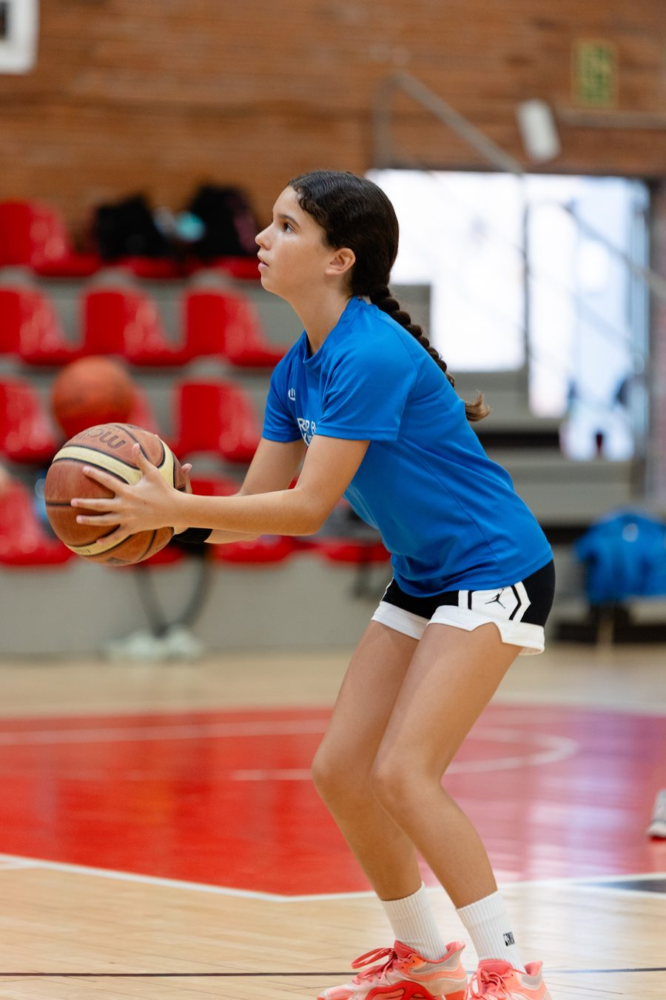
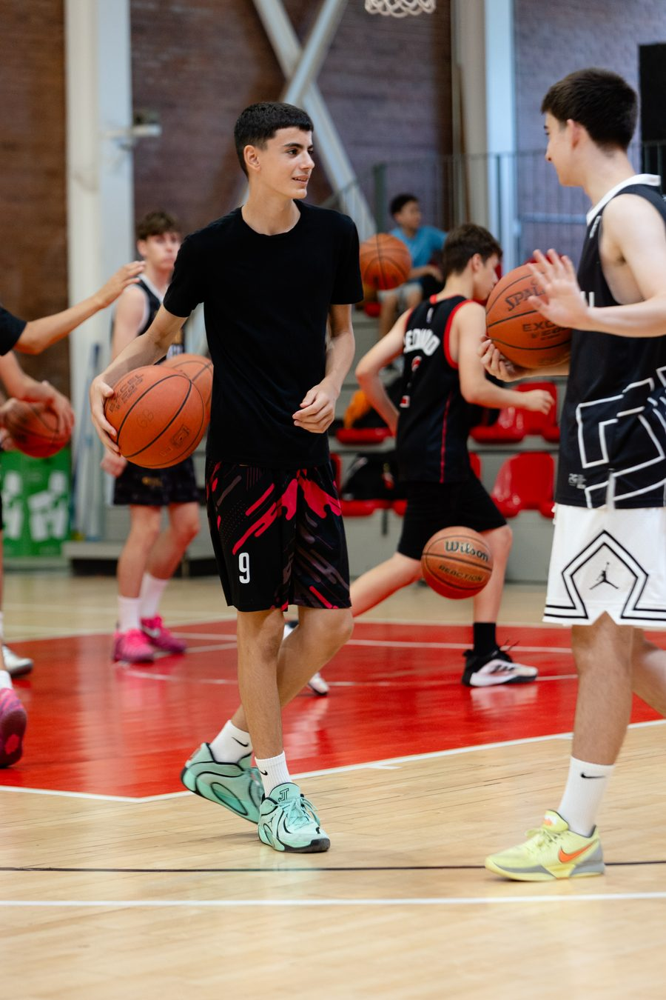
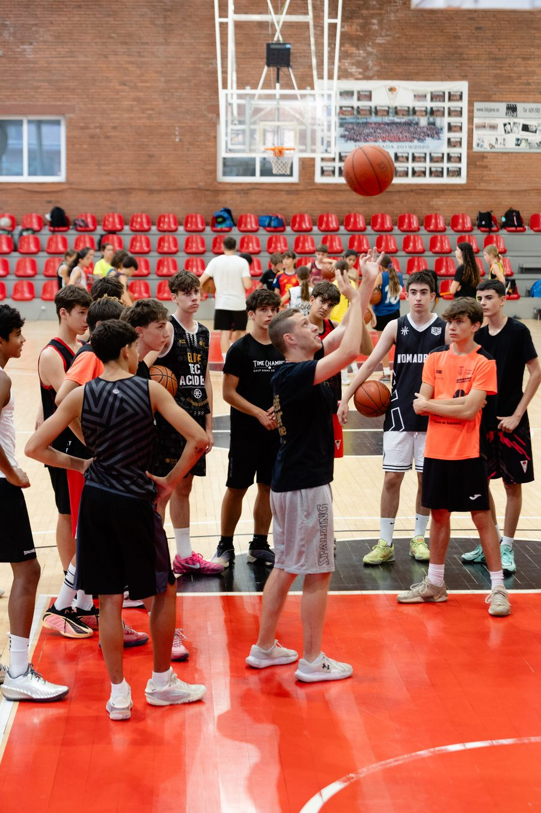

Campus de bàsquet · El Clot · Barcelona
Campus de bàsquet a Barcelona
Tecnificació de bàsquet al Clot per a jugadors i jugadores de formació · CB Grup Barna × Time Chamber. Setmanes intensives amb focus propi, grups per edat i nivell, i obertes a qualsevol club de Barcelona i de la província.

Fitxa del campus
Totes les dades en un sol lloc, sense haver de buscar-les per la pàgina. La darrera edició tancada és l'Estiu 2026; les dates de la propera s'anuncien aquí i a @cbgrupbarna.
- Què és
- Campus de tecnificació de bàsquet. No és un casal amb pilota: cada setmana treballa un aspecte concret del joc.
- Qui l'organitza
- CB Grup Barna × Time Chamber. El club hi posa l'estructura i els entrenadors; Time Chamber, la metodologia de treball individual.
- On
- La Nau del Clot, Barcelona. Instal·lació oficial del club.
- Adreça
- Carrer de la Llacuna, 170-172 · 08018 Barcelona · barri del Clot, Districte de Sant Martí.
- Com arribar-hi
- Metro L1 Glòries i L2 Clot · Rodalies Clot-Aragó · autobusos del Clot i Glòries. A peu des de Westfield Glòries.
- Per a qui
- Set categories: Escoleta, Premini, Mini, Preinfantil, Infantil, Cadet i Júnior. Els grups es fan per categoria i nivell, de manera que qui comença no entrena amb qui ja porta anys competint.
- Nens i nenes
- Sí. El campus és mixt i el club té paritat real entre la línia femenina i la masculina.
- Cal ser del Barna?
- No. És obert a jugadors i jugadores de qualsevol club de Barcelona i de la província. Els del club tenen prioritat d'inscripció i preu propi.
- Quan
- A l'estiu, en setmanes consecutives de finals de juny a principis d'agost. L'edició 2026 va anar del 23 de juny a l'1 d'agost.
- Horari
- Jornada completa de 9:00 a 17:00 h · mitja jornada de 9:00 a 13:30 h.
- Preu
- Depèn de la modalitat i de si ets del club. No es publica al web: escriu-nos amb l'edat i te la diem el mateix dia. Pagament fraccionat disponible.
- Dinar
- Inclòs a la jornada completa. La mitja jornada acaba abans de dinar.
- Serveis
- Servei d'acollida al matí, dinar a la jornada completa i excursió el divendres a Illa Fantasia.
- Què s'hi treballa
- Tir, maneig de pilota, joc de l'1x1, fonaments individuals i lectura de joc. Cada setmana té un focus propi, de manera que qui ve més d'una setmana no repeteix.
- Qui hi entrena
- Els entrenadors del club i de Time Chamber. Hi han passat Robert Willett i Nolan Willett (entrenadors de tecnificació NBA), Ainhoa López (jugadora professional, selecció espanyola), Malak Shady (MVP de 3x3), Serge Ibaka (campió NBA 2019) i Yankuba Sima (Eurolliga).
- Quants n'hi ha
- Més de 200 jugadors i jugadores per edició, amb un límit aproximat de 50 places per setmana per mantenir la ràtio de treball.
- Idioma
- Català i castellà. Els entrenadors convidats internacionals treballen en anglès amb traducció.
- Com inscriure-s'hi
- Per WhatsApp al +34 698 425 153 o pel formulari del club. Les darreres edicions s'han omplert abans de començar.
Què és el campus del Barna
El campus de bàsquet del CB Grup Barna és el programa d'entrenament intensiu que el club organitza durant les vacances escolars al barri del Clot. No és una activitat de lleure amb pilota: és tecnificació, amb sessions dedicades a un aspecte concret del joc i grups fets per edat i nivell.
El club el treballa amb Time Chamber, que aporta la metodologia de treball individual. La combinació és la que defineix el campus: el volum de repeticions d'una escola de tecnificació amb l'ambient d'equip d'un club de barri amb seixanta-un anys d'història.
Qui hi entrena
El que separa un campus de tecnificació d'un casal amb pilota no és el que diu el fullet: són els entrenadors que hi passen. La feina diària la porten els entrenadors del club i de Time Chamber, amb el mateix criteri que a la temporada. I cada edició hi convida gent que no sol trepitjar un campus de barri:
- Robert Willett — entrenador NBA (@bballwillett), dins del programa Time Chamber Experience × CB Grup Barna. Veure la sessió al Clot →
- Nolan Willett — entrenador de tecnificació, també amb Time Chamber al Clot. Veure la sessió →
- Serge Ibaka — campió de l'NBA 2019, de visita al campus. Veure la visita →
- Yankuba Sima — jugador d'Eurolliga, sessió al campus del Barna. Veure la sessió →
- Ainhoa López — jugadora professional i internacional espanyola, formada a la mateixa pista del Clot. @ainhoalopez_official
- Malak Shady — MVP de 3x3 i referent del bàsquet urbà. @malakshady_22
No són col·laboracions anunciades en una nota de premsa: estan gravades, publicades i es poden veure. És la diferència entre un campus que posa un nom conegut a la portada i un campus on aquest nom trepitja la pista.
I fora de l'estiu
El campus d'estiu és el gruix, però no l'única setmana de tecnificació de l'any. A les vacances escolars el club obre dues edicions curtes al mateix lloc i amb la mateixa metodologia:
- Campus de Nadal — entre finals de desembre i principis de gener.
- Campus de Setmana Santa — el Flow Camp, una setmana durant les vacances.
Si el que vols és entendre què vol dir tecnificar abans d'apuntar-hi ningú, això s'explica a Tecnificació de bàsquet a Barcelona.
El campus i el 3x3 del club
El campus no és l'única cita d'estiu del Barna al Clot. El club organitza el 3×3 Westfield Glòries, torneig registrat a la FIBA amb 2.000 € en premis —1.000 € femenins i 1.000 € masculins, repartiment paritari, únic a Barcelona—, 10 categories i tres seus al barri. Moltes famílies fan les dues coses: campus al matí de l'estiu, torneig el cap de setmana de juny.
El 3×3 del club al web → · Web oficial del 3×3 Barna →
Com s'organitza
Cada setmana té un focus propi, de manera que qui ve més d'una setmana no repeteix continguts. Aquests són els mòduls que ha treballat el club en les darreres edicions:
Flow Camp
Lectura de joc i presa de decisions.
TC Basics
Fonaments: peus, equilibri, mecànica.
Shooting Academy
Tir, en totes les seves situacions.
One & One Mastery
El joc d'un contra un: finta i creativitat ofensiva.
Ballhandling Lab
Maneig de pilota i bot sota pressió.
Skills Lab Experience
Treball combinat d'habilitats: el broche de l'edició.
Dates orientatives, calcades sobre l'edició de referència. Es confirmen a aquesta pàgina i a Instagram abans de l'obertura d'inscripcions de cada any.
Preus
Dues modalitats segons horari, amb àpat inclòs a la jornada completa. Places obertes a jugadors i jugadores del Barna i de fora del club.
9h a 17h
- Àpat de migdia inclòs
- Servei d'acollida des de les 9h
9h a 13:30h
- Mateixos grups i mateix focus setmanal
La quota no es publica al web: escriu-nos per WhatsApp al +34 698 425 153 o per correu amb l'edat del jugador o jugadora i te la diem el mateix dia. Es pot reservar plaça amb pagament fraccionat en fins a 3 terminis, i cada any s'obre un descompte per inscripció anticipada; les dates i el codi es publiquen aquí i a @cbgrupbarna quan s'obren les inscripcions.
El campus, en imatges
Fotos de la darrera edició amb Time Chamber, a La Nau del Clot.






Aquestes són sis fotos triades. La galeria completa de l'estiu — totes les setmanes, amb foto i vídeo — és a la Galeria Fotogràfica del club.
Veure la galeria de l'estiu →Estrelles del campus
Una cosa que no fa tothom: al campus hi han passat referents del bàsquet a entrenar amb els nostres jugadors i jugadores. No de visita per a la foto — a pista, dirigint sessió. Ho separem en tres grups perquè no tot es va gravar al mateix lloc: primer el que va passar a La Nau del Clot, després la feina dels entrenadors i dels jugadors d'elit amb Time Chamber, que és el nostre soci del campus.
A La Nau del Clot
Gravat al pavelló del club, amb els nostres jugadors i jugadores a pista.
El resum de l'edició
Reel final del campusCom va acabar el Campus Timechamber: totes les setmanes en un vídeo.
Veure a Instagram →Shooting Academy
Setmana 3 del campusLa setmana dedicada al tir, de dins de la pista.
Veure a Instagram →Ainhoa López
Selecció Espanyola · formada al ClotJugadora professional. Va sortir d'aquesta pista i hi ha tornat a entrenar.
@ainhoalopez_official →Entrenadors NBA amb Time Chamber
La metodologia de treball individual que el campus incorpora ve d'aquí.
Nolan Willett
Entrenador NBASegona sessió: lectura de joc i resolució a prop de cistella.
@nolanwillett3 →Jugadors d'elit que hi han entrenat
Sessions amb Time Chamber, el soci del campus. No totes es van gravar a La Nau: quan no hi va ser, ho diem.
Joel Parra
ACB · JoventutSessió amb Time Chamber al Pavelló Olímpic de Badalona, no a La Nau.
@joelparra →Les convocatòries publicades
Cada edició del campus s'anuncia amb @timechamber_es. Aquestes són les quatre darreres.
Els vídeos són d'Instagram i només es carreguen si hi cliques. Tot el recull de l'edició és a @cbgrupbarna.
El campus a Instagram
Les convocatòries de cada edició, publicades i enllaçades — no una promesa, un rastre que es pot comprovar.
La seu
La Nau del Clot, Carrer de la Llacuna 170-172, 08018 Barcelona — el punt esportiu principal del CB Grup Barna, al barri del Clot. Horari del campus: 9h–13:30h en mitja jornada, 9h–17h en jornada completa, amb servei d'acollida i àpat de migdia inclòs a la jornada completa.
 EscoletaSi encara no ha començat i té entre 4 i 7 anys, el camí és aquest.
4 a 8 anys
CalendariEl calendari de tots els equips federats del club.
Temporada 26·27
EscoletaSi encara no ha començat i té entre 4 i 7 anys, el camí és aquest.
4 a 8 anys
CalendariEl calendari de tots els equips federats del club.
Temporada 26·27
 3x3 BarcelonaEl torneig urbà del club a Westfield Glòries.
Cada estiu
3x3 BarcelonaEl torneig urbà del club a Westfield Glòries.
Cada estiu
A qui va dirigit
A nens i nenes que juguen a bàsquet o que hi volen començar, tant si són del CB Grup Barna com si vénen d'un altre club. Cada setmana el club reserva places per als seus jugadors i places obertes a jugadors i jugadores de fora, i els grups es tanquen per edat i nivell perquè ningú no entreni per sobre ni per sota del que li toca.
Si el vostre fill o filla encara no ha començat i té entre 4 i 7 anys, el camí natural no és el campus sinó l'Escoleta, l'escola de bàsquet del club, que funciona tot l'any amb en Julio Torralba.
Propera edició
Les dates de la propera edició i l'obertura d'inscripcions s'anuncien en aquesta pàgina i a @cbgrupbarna. Les darreres edicions s'han omplert abans de començar, així que la manera segura d'entrar-hi és demanar l'avís previ: el club escriu a qui és a la llista quan s'obren les places, un dia abans de publicar-ho.
Preguntes freqüents
Quins entrenadors i jugadors han passat pel campus?
Per les darreres edicions hi han passat Ainhoa López, jugadora professional i internacional espanyola formada al Clot; Robert Willet (@bballwillett), entrenador de tecnificació NBA; i Malak Shady, referent del bàsquet a xarxes i MVP de 3x3. No hi van de visita per a la foto: dirigeixen sessió a pista amb els jugadors i jugadores del campus.
Quanta gent va passar pel campus l'estiu de 2026?
Unes 150 nenes i nens al llarg de les sis setmanes de l'edició de 2026, en grups per edat i nivell i amb un límit aproximat de 50 places per setmana. Hi va haver participants del CB Grup Barna i d'altres clubs de Barcelona i de la província.
Per a quines edats és el campus de bàsquet?
El campus del CB Grup Barna és per a jugadors i jugadores de base, des de l'edat de l'Escoleta fins a categories cadet i júnior. Els grups es fan per edat i nivell, de manera que un nen o nena que comença no entrena amb qui ja porta anys competint.
Cal jugar al CB Grup Barna per apuntar-s'hi?
No. El campus és obert a jugadors i jugadores de qualsevol club de Barcelona i de la província. Cada setmana hi ha places per a gent del Barna i places per a gent de fora.
Quantes places hi ha per setmana?
El campus treballa amb un límit aproximat de 50 places per setmana per mantenir la ràtio d'entrenador per jugador. Les setmanes s'omplen per ordre d'inscripció i les darreres edicions s'han completat abans de començar.
On es fa el campus?
Al barri del Clot, Districte de Sant Martí de Barcelona. La Nau del Clot és el punt esportiu principal del CB Grup Barna.
Quan obren les inscripcions de la propera edició?
Les dates de la propera edició s'anuncien a aquesta pàgina i a Instagram (@cbgrupbarna). Qui vulgui rebre l'avís abans que s'obri al públic pot demanar-ho pel WhatsApp del club (+34 698 425 153) i entra a la llista d'avisos.
Quan és el campus d'estiu? Dates i setmanes
A l'estiu, en setmanes consecutives de finals de juny a principis d'agost. L'edició de 2026 va anar del 23 de juny a l'1 d'agost: sis setmanes, i cadascuna es pot fer per separat. Les dates de la propera edició s'anuncien en aquesta pàgina i a Instagram (@cbgrupbarna).
Encara compares opcions? Hem escrit una guia sobre què mirar abans d'apuntar ningú a un campus de bàsquet a Barcelona, tant si acaba sent el nostre com si no.
Vull que m'aviseu del proper campus
Deixa'ns el contacte i t'escrivim quan s'obrin les inscripcions, abans de publicar-les.